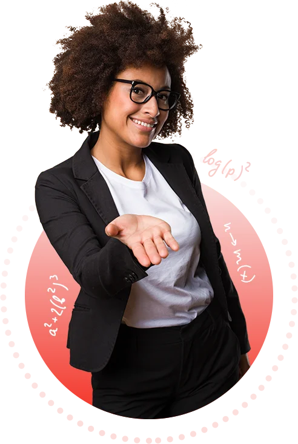

INFOMAX
COMPUTER ACADEMY
Our Courses
CCC ||
CCA ||
DCA ||
ADCA ||
C++ ||
JAVA ||
PYTHON ||
TALLY ||
WEB DESIGNING ||
NIELIT
COURSES ||

CCC - Course on Computer Concept
What is CCC course?
NIELIT CCC Course is designed to impart a basic level of IT Literacy. After completing the NIELIT CCC course,
aspirants can use the computer for the basic purposes of preparing their personal/business letters, viewing
information on the internet, receiving and sending emails, etc.
What is the qualification for CCC?
There is no minimum qualification required to apply for or take the Course on Computer Concept examination.
What is included in CCC course?
NIELIT CCC course covers the basic concepts related to computer hardware and software, presentations, spreadsheets,
internet and email.
Go To TOP
Go To BOTTOM
CCA - Certificate Course in Computer Application
What is CCA certificate?
CCA, an acronym for Certificate in Computer Application, is a vocational certification program that aims to upgrade
an individual's computer skills, enhancing their employability.
What is the qualification for CCA?
Candidates must have passed graduation or equivalent level (with Mathematics as a subject of study at 10+2 or
graduation level) examination from a recognized university. He/she must have obtained at least 50% (relaxable for
reserved category candidates) of the marks at graduation or equivalent level.
Which subject is CCA?
Certificate in Computer Applications is a certificate course to study computer applications in depth. The course
imparts theoretical, practical and technical knowledge to its learners about various computer tools that are used in
day to day life.
Go To TOP
Go To BOTTOM
DCA - Diploma in Computer Application
What is DCA certificate?
DCA, an acronym for Diploma in Computer Application, is a vocational certification program that aims to upgrade an
individual's computer skills, enhancing their employability.
What is the qualification for CCA?
Candidates must have passed graduation or equivalent level (with Mathematics as a subject of study at 10+2 or
graduation level) examination from a recognized university. He/she must have obtained at least 50% (relaxable for
reserved category candidates) of the marks at graduation or equivalent level.
Which subject is DCA?
Diploma in Computer Applications is a certificate course to study computer applications in depth. The course imparts
theoretical, practical and technical knowledge to its learners about various computer tools that are used in day to
day life.
Go To TOP
Go To BOTTOM
ADCA - Advance Diploma in Computer Application
What is ADCA certificate?
ADCA, an acronym for Diploma in Computer Application, is a vocational certification program that aims to upgrade an
individual's computer skills, enhancing their employability.
What is the qualification for ADCA?
Candidates must have passed graduation or equivalent level (with Mathematics as a subject of study at 10+2 or
graduation level) examination from a recognized university. He/she must have obtained at least 50% (relaxable for
reserved category candidates) of the marks at graduation or equivalent level.
Which subject is ADCA?
Diploma in Computer Applications is a certificate course to study computer applications in depth. The course imparts
theoretical, practical and technical knowledge to its learners about various computer tools that are used in day to
day life.
Go To TOP
Go To BOTTOM
C++ - Object Oriented Programming using C++
What is C++
What Does C plus plus Programming Language Mean? C++ (said C plus plus) is an object-oriented computer language
created by notable computer scientist Bjorne Stroustrop as part of the evolution of the C family of languages.
What is different between C and C++?
C is a structural or procedural programming language that was used for system applications and low-level programming
applications. Whereas C++ is an object-oriented programming language having some additional features like
Encapsulation, Data Hiding, Data Abstraction, Inheritance, Polymorphism, etc.
What is the Oops concept?
Object-oriented programming (OOP) is a computer programming model that organizes software design around data, or
objects, rather than functions and logic. An object can be defined as a data field that has unique attributes and
behavior.
Go To TOP